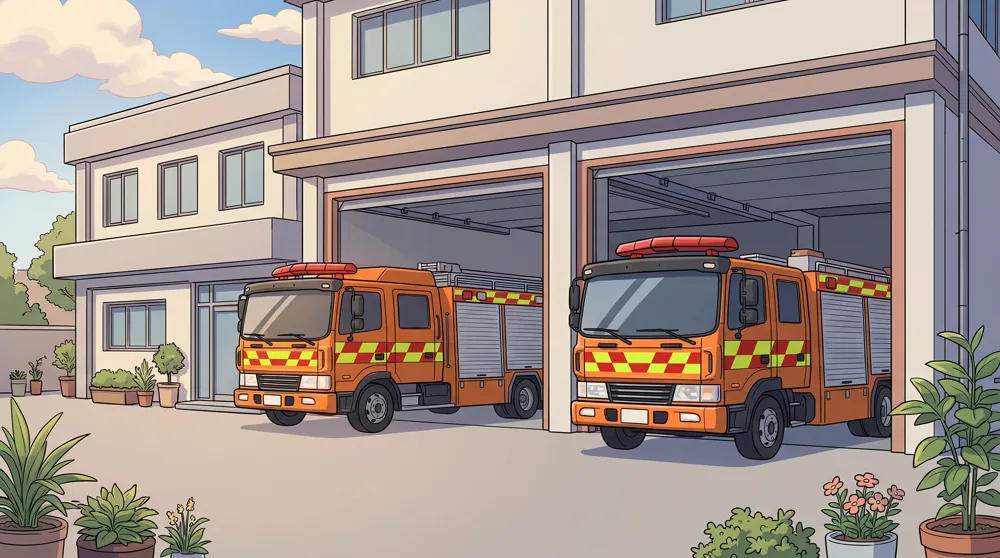
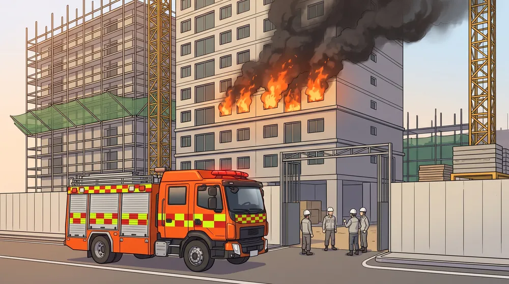

ICTC 웹툰 · 시즌 1
지휘통제절차 편현장지휘관의 첫 판단
가람구 한솔아파트 신축공사현장 화재. 지령 한 줄에서 지휘권 선언, 현장지휘소까지 —
SOP 100-113 지휘통제절차를 웹툰으로 따라갑니다.
회차 목록
-

1화 공개지령 한 줄출동은 지령을 읽는 데서 시작된다 -
 2화 공개도착 전 지휘출동 중에 무엇을 모으고, 누구에게 무엇을 미리 맡기는가
2화 공개도착 전 지휘출동 중에 무엇을 모으고, 누구에게 무엇을 미리 맡기는가 -

3화 공개지휘권 선언도착과 동시에 무전으로 — 누가, 언제부터 지휘하는가 -
 4화 공개첫 보고선언 + 최초 상황보고 = 지휘권 확립. 무전 한 번에 무엇을 담는가
4화 공개첫 보고선언 + 최초 상황보고 = 지휘권 확립. 무전 한 번에 무엇을 담는가 - 준비 중5화 준비 중첫 판 짜기누구에게, 어디서, 무엇을 — 구체적 임무부여와 급수체계
- 준비 중6화 준비 중지휘권 이양얼굴을 마주 보고 넘겨받는다 — 대면 인수인계와 현장지휘소
- 준비 중7화 준비 중조직을 세우다단위지휘관, 무전망, 자원대기소, RIT — 현장을 조직으로 움직인다
- 준비 중8화 준비 중폭발우선순위보고, 긴급탈출, 인원점검 — 위기의 몇 분
- 준비 중9화 준비 중쓰고, 모으고, 알린다대응활동계획, 상황판단회의, 언론 브리핑
- 준비 중10화 준비 중완진은 확인이다초진에서 완진까지 — 확인하지 않은 곳은 끝나지 않았다
- 준비 중11화 준비 중차고 문이 닫힐 때까지철수와 귀소, 다음 출동을 위한 준비
- 준비 중12화 준비 중네 가지 질문디브리핑 — 계획, 실제, 이유, 다음
등장인물
정종인 소방령
지휘대장
지휘대장
서종근 소방경
선착대장
선착대장
주강호 소방장
진압1대 선임 대원·운전원
진압1대 선임 대원·운전원
이도경 소방사
진압1대 신입 대원
진압1대 신입 대원
신태선 소방장
119종합상황실 요원
119종합상황실 요원
고기석 소방위
구급대장(임시의료소장)
구급대장(임시의료소장)
임동완 소방교
구조1대 구조대원
구조1대 구조대원
근거: SOP100-113 지휘통제절차 해설(2025.12. 개정판)
등장 인물·지명은 가상입니다. · 전 12화
ICTC 지휘역량강화센터 교육용
만든이: 부산지휘역량강화센터(정종인,서종근,주강호,신태선,고기석,이도경) 공동제작
등장 인물·지명은 가상입니다. · 전 12화
ICTC 지휘역량강화센터 교육용
만든이: 부산지휘역량강화센터(정종인,서종근,주강호,신태선,고기석,이도경) 공동제작